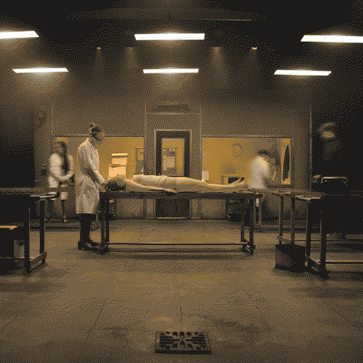
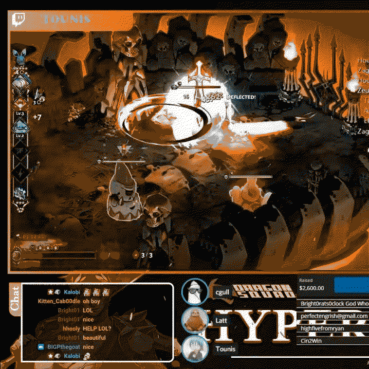

My work with immersive and interactive technology has always been informed by my background in theatre and performance. Here's a selection of pieces I've performed in and directed!
love & piss
love & piss is both a chaotic carnival of rebellion and a bright celebration of queer identity. To explore the problems of expression of personal identity and bodies in the UK today, love & piss takes us into a fantasy world within the men’s bathroom. Here, the foundations of gender are laid bare within the damp, grime and waste. Andrew finds himself thrown into the centre of this world within the walls, pushed between strange pubs, bus stops, and police stations, trying to find a way out without losing it entirely.
How do you make sense of a world built on piss?
How do you make sense of a world built on piss?
Performed with 3BUGS Theatre Company, performed at Greenside Infirmary St., directed and written by me
Redpython
A comical, completely improvised romp through the annals of history. Follow our dashing, daring and (occasionally) dim-witted protagonist, Redpython as they muddle their way through some of the silliest situations in history.
Performed at the Bristol Improv Theatre, directed by Amy Iles
Improvabunga!
In a world where movie plots are getting too predictable, one improv show dares to break the mould. You choose the genre, subgenre, setting and title and they will do the rest, creating a show brimming with all your favourite tropes. Featuring live musical accompaniment and four buzzers to control the performers, this is a show you won't want to miss. 'An understandable fringe favourite' (FringeReview.co.uk). ***** (BroadwayBaby.com). **** (Clownster.co.uk).
Performed with Watch This Improv Troupe, performed at theSpace, Niddry St., directed by Zoe Cussen and Laura Walsh
How to Disappear Completely and Never be Found

Overworked and overwrought, an ambitious advertising executive walks out of her busy office and never comes back — leaving behind a trail of corporate fraud — huge debts to an increasingly irate drug dealer — and her late mum’s ashes in an urn on her desk. Erasing her old life and establishing a different one ought to be simple. But as she journeys between tarot parlours, tube stations and tatty bedsits, getting ever closer to her final appointment on a coroner’s slab, Charlie discovers it takes more than a new name and a new identity to escape the reality of who you are inside.
Performed with Little Earthquake, at the University of Birmingham, directed by Gareth Nicholls
Hyper Delivery 4

A charity esports event delivered by DragonSquad Esports.
The event was a 10 hour marathon livestream of 25 different speedunners of the videogame Hades, by Supergiant Games. Players were livestreamed over the marathon in a 10 hour long speedrun race in a relay format. Charity incentives throughout the stream included trivia questions about greek mythology (in theme with the videogame) for the racers to answer, with the reward of time penalties for the opposing team.
The stream attracted over 1000 viewers at its peak during the stream, and raised over $4000 for Trans Lifeline.
Watch a video of the full stream here.
The event was a 10 hour marathon livestream of 25 different speedunners of the videogame Hades, by Supergiant Games. Players were livestreamed over the marathon in a 10 hour long speedrun race in a relay format. Charity incentives throughout the stream included trivia questions about greek mythology (in theme with the videogame) for the racers to answer, with the reward of time penalties for the opposing team.
The stream attracted over 1000 viewers at its peak during the stream, and raised over $4000 for Trans Lifeline.
Watch a video of the full stream here.
Run by DragonSquad Esports
Re-Rovered
Re-Rovered is a farcical play with a sinister truth, bridging the world of a training video, the tale of a trip to Mardi Gras gone wrong, with the ugly corporate reality which has supposedly learned from it. For a play about partying: It has one hell of a hangover.
Performed with 3BUGS Theatre Company, directed by Heather Collier
A Very Merry Shawshank Redemption Christmas
A playful adaptation of the Shawshank Redemption for pantomime!
Andy Dufresne is falsely imprisoned for a crime he didn’t commit, the murder of his wife and her lover. Sent to Shawshank Prison for two life sentences, Andy is faced with the villainous and cruel Warden Norton and his captain of the guard, Hadley. With only friendship, his wits (and a bit of Pantomime magic!) how will Andy set things right?
Watch a video of the last night's performance here.
Andy Dufresne is falsely imprisoned for a crime he didn’t commit, the murder of his wife and her lover. Sent to Shawshank Prison for two life sentences, Andy is faced with the villainous and cruel Warden Norton and his captain of the guard, Hadley. With only friendship, his wits (and a bit of Pantomime magic!) how will Andy set things right?
Watch a video of the last night's performance here.
Performed with UoB Panto Society, directed and written by me